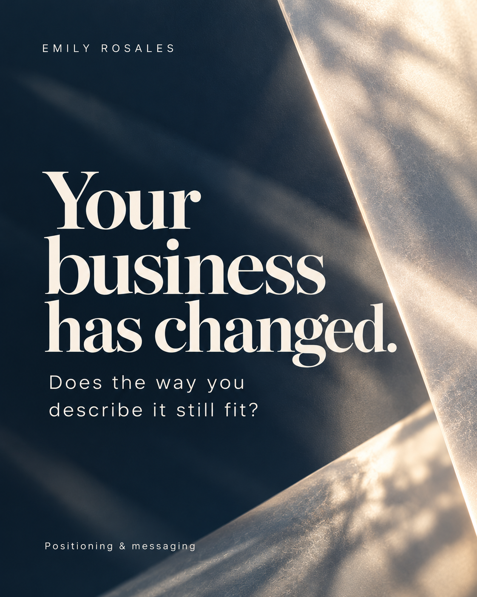

Library
Brand Library
Find and download every photo, artwork, and file.
20 of 20 files
 EMILY-001 · Identity artworkStylescapeDownload
EMILY-001 · Identity artworkStylescapeDownload EMILY-002 · Identity artworkSignature: The Clear EdgeDownload
EMILY-002 · Identity artworkSignature: The Clear EdgeDownload- EMILY-003 · PhotographyPortrait in navyDownload
 EMILY-004 · PhotographyPortrait in ivoryDownload
EMILY-004 · PhotographyPortrait in ivoryDownload EMILY-005 · PhotographyCandid in ivoryDownload
EMILY-005 · PhotographyCandid in ivoryDownload- EMILY-006 · PhotographyStanding in navyDownload
- EMILY-007 · PhotographyCoastal terraceDownload
 EMILY-008 · PhotographyStudio, seatedDownload
EMILY-008 · PhotographyStudio, seatedDownload- EMILY-009 · PhotographyAt the deskDownload
 EMILY-010 · Application artworkLinkedIn bannerDownload
EMILY-010 · Application artworkLinkedIn bannerDownload EMILY-011 · Application artworkSocial coverDownload
EMILY-011 · Application artworkSocial coverDownload
EMILY-012 · Application artworkSocial postDownload- EMILY-013 · Application artworkEmail headerDownload
- EMILY-014 · Application artworkSpeaker slideDownload
- EMILY-015 · Application artworkPresentation titleDownload
- EMILY-016 · DocumentAI contextDownload
- EMILY-017 · DocumentStrategyDownload
- EMILY-018 · DocumentIdentityDownload
- EMILY-019 · DocumentApplicationsDownload
- EMILY-020 · DocumentChannelsDownload


No files match. Clear the filters to see everything.